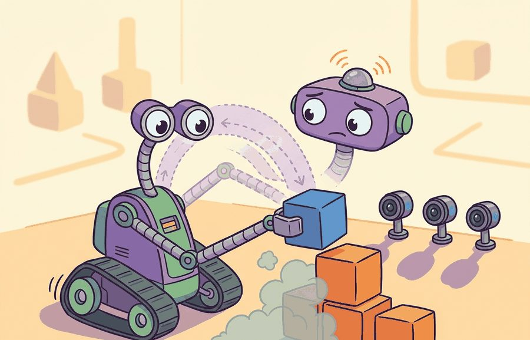
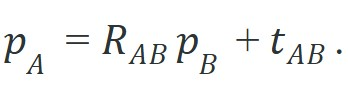
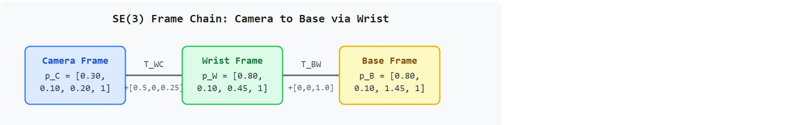
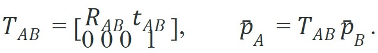

"SE(3) is the promise that the object does not change when you change the frame you use to describe it."
A Rigid Body, Indifferent to Your Coordinate Choices

This section assumes familiarity with rotation matrices and SO(3) (Special Orthogonal group in 3D) from section 4.3. The frame-graph notation introduced here is extended in section 4.5, which covers transform trees and how robots maintain chains of frames across a full kinematic structure. SE(3) (Special Euclidean group in 3D, combining rotation and translation) composition recurs throughout Part VII, particularly in section 7.7, where learned policies consume base-frame poses assembled from the same homogeneous transform chains developed here.
A wrist-mounted camera sees a coffee mug at (0.12, -0.05, 0.31) meters. The robot arm's controller needs that same mug expressed relative to the base. Get the math wrong and the gripper misses by centimeters, or worse, drives into the table. This conversion happens hundreds of times per second in every modern manipulation system, and SE(3) is the single structure that makes it reliable. Right now, as learned visuomotor policies replace hand-coded planners in embodied AI, the ability to compose rigid transforms correctly is the bedrock skill separating working robots from ones that crash. By the end of this section you will build and verify a full transform chain in code and understand exactly where a bug would enter.
Move a coffee mug two centimeters in the real world and nothing about it changes; but describe it from the camera frame instead of the base frame and every one of its coordinates is different, even though the mug never moved. SE(3) is the structure that lets a robot juggle those competing descriptions without ever losing track of where the mug actually is. This section builds that structure from rotation, translation, and frame labels, shows how homogeneous coordinates collapse composition into a single matrix multiplication, and tests one transform chain numerically so you can see exactly where a pose bug would enter a robot pipeline.
The key question is practical: if a camera sees a block at one coordinate, how does the robot compute the coordinate that its controller can actually use?
A rigid transform preserves distances and angles. In 3D, it combines a rotation $R \in SO(3)$ and a translation $t \in \mathbb{R}^3$. For a point $p_B$ expressed in frame $B$, the same physical point expressed in frame $A$ is

The subscript convention matters. Here $R_{AB}$ rotates coordinates from frame $B$ into frame $A$, and $t_{AB}$ is the origin of frame $B$ expressed in frame $A$. The transform is valid only when both frames are rigid, the units match, and the timestamp is appropriate for the motion being controlled.
Homogeneous coordinates append a final 1 to each point so that rotation and translation combine into one matrix multiply. This matters in practice. A robot controller runs dozens of frame conversions per control cycle, and it needs a single branchless multiply, not separate rotation and translation steps. One multiply also batches cleanly across hundreds of candidate grasp poses. Without it, every composition step splits into two operations. That asymmetry introduces off-by-one bugs that unit tests miss but that break the robot at runtime. Complexity grows fast. A 10-link arm without homogeneous coordinates requires 20 interleaved rotate-then-translate calls, and a misplaced index there silently corrupts every downstream link. With homogeneous coordinates the same chain is 10 matrix multiplies, each independently verifiable by a round-trip check. Figure 4.4A shows this layout: the $3\times 3$ rotation block and the $3\times 1$ translation column packed into one $4\times 4$ matrix that is then applied to move a point between frames. Mechanically, the fourth row of $T_{AB}$ holds $[0\ 0\ 0\ 1]$. When $T$ multiplies $\bar p_B = [x,y,z,1]^\top$, the upper $3\times 4$ block computes $Rp+t$. The fourth row keeps the homogeneous coordinate equal to 1, so the point interpretation survives any number of chained multiplications.


Before reading on: which subscript in $T_{AB}$ names the frame a point is coming from, and which names where it ends up? In practice, engineers new to this convention typically get this backwards the first time, and the robot pays for it.
A homogeneous coordinate is not an abstraction: it is the difference between a gripper that catches and one that crashes.
Engineers often assume that $T_{AB}$ takes a point expressed in frame $A$ and moves it into frame $B$, reading the subscript as "from A to B." The convention in this section (and in Murray, Lynch, and most robotics libraries) is the opposite: $T_{AB}$ takes a point expressed in frame $B$ and expresses it in frame $A$, so the right subscript names the source frame and the left subscript names the destination frame. In an embodied AI pipeline this matters immediately: writing base_from_camera and then multiplying a camera-frame point on the right is correct, but mentally labeling the same matrix "camera to base" and composing it accordingly produces a silently wrong result that no orthogonality check will catch. The reliable mental model is to read $T_{AB}$ as "expressed in A, given in B" and verify by confirming that the source subscript of one transform matches the destination subscript of the next when chaining: $T_{AC} = T_{AB} T_{BC}$, where $B$ cancels in the middle.
So far: a rigid transform packs a rotation and a translation into one 4x4 matrix $T_{AB}$, the right subscript names the source frame and the left subscript names the destination frame, and reading the subscripts backwards is the single most common source of a silently wrong pose.
When composing many SE(3) transforms in a loop (trajectory replay, batch calibration, or multi-step IK), the 3x3 rotation block drifts away from SO(3) silently because NumPy matrix multiply never checks orthogonality. After every chain of more than roughly ten multiplications, re-project the rotation block with scipy.spatial.transform.Rotation.from_matrix(T[:3, :3]).as_matrix() and write it back into the 4x4 matrix. A quick sanity check is np.allclose(R.T @ R, np.eye(3), atol=1e-6); if it fails, re-projection is overdue and any inverse computed from that matrix will compound the error rather than cancel it.
SE(3) is not just a storage format for pose. It is a group: transforms compose, have an identity, and have inverses. Those properties let a robot validate frame chains with identity checks such as $T_{AB}T_{BA}=I$ before a learned policy or controller sees the result.
Think of SE(3) transforms like driving directions. Walking three blocks north then two blocks east is itself a valid set of directions (closure). Staying in place is a valid trip (identity). And for any route you take, there is always a return route that undoes it exactly (inverse). Because these three guarantees hold, you can chain any number of direction segments together, hand the combined route to someone else, and trust that they can always find their way back. SE(3) gives robot frame chains the same guarantee: compose as many transforms as you need, and the round-trip check $T \cdot T^{-1} = I$ is always available to confirm nothing was lost.
Input: A sequence of $n$ rigid transforms $T_1, T_2, \ldots, T_n \in SE(3)$ (each a $4 \times 4$ matrix with rotation block $R \in SO(3)$ and translation $t \in \mathbb{R}^3$), and a point $p$ expressed in the final frame as homogeneous coordinates $\bar{p} = [x, y, z, 1]^\top$.
Output: The point $\bar{p}_{\text{out}}$ expressed in the base frame, and a scalar round-trip error $\epsilon$ confirming transform validity.
Trace the camera-to-base conversion with the same numbers as Code Fragment 4.4.1, but written out arithmetic by arithmetic. Both rotation blocks are the identity here, so the multiply reduces to adding translation columns.
Setup. Detected point in the camera frame: $\bar p_C = [0.30,\ 0.10,\ 0.20,\ 1]^\top$. Wrist-from-camera translation: $t_{WC} = [0.50,\ 0.00,\ 0.25]$. Base-from-wrist translation: $t_{BW} = [0.00,\ 0.00,\ 1.00]$.
Step 1, camera to wrist. Apply $T_{WC}$. With $R = I$, each coordinate is just the point plus the translation: $x = 0.30 + 0.50 = 0.80$, $y = 0.10 + 0.00 = 0.10$, $z = 0.20 + 0.25 = 0.45$. The homogeneous coordinate stays $1$. So $\bar p_W = [0.80,\ 0.10,\ 0.45,\ 1]^\top$.
Step 2, wrist to base. Apply $T_{BW}$ to $\bar p_W$: $x = 0.80 + 0.00 = 0.80$, $y = 0.10 + 0.00 = 0.10$, $z = 0.45 + 1.00 = 1.45$. Result $\bar p_B = [0.80,\ 0.10,\ 1.45,\ 1]^\top$, matching the printed base point: [0.8, 0.1, 1.45].
Step 3, round-trip check. Apply the inverse (which negates each translation, since $R = I$): $z = 1.45 - 1.00 - 0.25 = 0.20$, $x = 0.80 - 0.50 = 0.30$, $y = 0.10$. Back to $[0.30,\ 0.10,\ 0.20]$, so $\epsilon \approx 0$ and the chain is trusted.
What reversing the order would do. Composing $T_{WC} T_{BW}$ instead of $T_{BW} T_{WC}$ would add $t_{BW}$ before $t_{WC}$; with identity rotations the sum is the same here, but introduce any non-identity $R$ in the wrist and the two orders diverge, placing the block (0.30, 0.10, 0.70) in the worked case discussed above. Order only looks harmless when every rotation is the identity.
Consider a wrist camera that detects a block at $(0.30, 0.10, 0.20)$ meters in the camera frame. The transform below converts that point into the robot base frame. Code Fragment 4.4.1 keeps the numbers small enough to check by hand: the camera is offset 0.50 meters forward and 0.25 meters upward from the wrist, and the wrist is 1.00 meter above the base.
# Compose two SE(3) transforms and apply them to one detected point.
# The final identity check catches inverted transform order or bad inverses.
# All distances are meters and all matrices use column-vector convention.
import numpy as np
def make_transform(rotation, translation):
transform = np.eye(4)
transform[:3, :3] = np.array(rotation, dtype=float)
transform[:3, 3] = np.array(translation, dtype=float)
return transform
base_from_wrist = make_transform(np.eye(3), [0.0, 0.0, 1.0])
wrist_from_camera = make_transform(np.eye(3), [0.5, 0.0, 0.25])
base_from_camera = base_from_wrist @ wrist_from_camera
point_camera = np.array([0.30, 0.10, 0.20, 1.0])
point_base = base_from_camera @ point_camera
round_trip = np.linalg.inv(base_from_camera) @ point_base
print("base point:", point_base[:3].round(3).tolist())
print("round trip:", round_trip[:3].round(3).tolist())base_from_wrist and wrist_from_camera via make_transform, then applies the resulting base_from_camera to point_camera. The np.linalg.inv round-trip confirms the inverse returns the point to the original camera coordinates.Expected output: the two translations shift the base-frame point, and the round trip returns it to the original camera measurement. A failing round trip means transform order, units, or frame labels are wrong; fix those before touching perception or control code.
Who: Robotics software engineer at a mid-size warehouse automation startup deploying a 6-DOF (six degrees of freedom) arm on a mobile base.
Situation: The team was building a pick-and-place pipeline: a wrist-mounted RGB-D camera (a sensor that captures a color image plus a per-pixel depth value) detected objects, and the arm controller consumed base-frame coordinates to plan grasps.
Problem: Grasp success dropped from 91% in static tests to 54% during mobile-base movement, yet the SE(3) composition code passed all offline unit tests.
Dilemma: Two theories competed. Option A: the camera extrinsic calibration (the measured SE(3) pose of the camera relative to the frame it is mounted on) had drifted and needed a full recalibration session (costly, 4-hour downtime). Option B: the tf2 (the ROS transform library, which maintains a time-buffered tree of frames and answers transform lookups between any two) lookup was retrieving the transform at current wall time rather than at the sensor timestamp, introducing up to 80 ms of stale pose while the base moved at 0.3 m/s. Recalibrating first would have masked the real bug.
Decision: The engineer added a round-trip identity check ($T_{BC} \cdot T_{CB} = I$) after every tf2 lookup and logged the lookup timestamp delta alongside it. The delta exposed the staleness immediately, so Option B was investigated first.
How: Using ROS 2 tf2 in Python, the team changed lookup_transform(target, source, rclpy.time.Time()) to lookup_transform(target, source, sensor_msg.header.stamp) with a 50 ms timeout. NumPy was used to verify the round-trip: np.allclose(T @ np.linalg.inv(T), np.eye(4), atol=1e-6).
Result: Grasp success recovered to 93% within one shift, with zero recalibration downtime. The timestamp delta at failure had been averaging 65 ms.
Lesson: Always pass the sensor timestamp, not wall time, to tf2 lookups, and guard every transform chain with a round-trip identity check before the controller consumes the result.
The hand-built fragment keeps frame semantics visible. In production, SciPy Rotation handles rotation representations, ROS 2 tf2 keeps a time-buffered frame tree, spatialmath-python gives compact pose algebra, Drake exposes typed rigid transforms, and OpenCV calibration anchors camera intrinsics and extrinsics. The shortcut removes boilerplate, but the hand-built version remains the debugging oracle.
base_from_camera when you meant camera_from_base produces a plausible number with the wrong physical meaning. The round-trip identity check (T @ T_inv == I) catches this before the controller sees it.scipy.spatial.transform.Rotation SLERP (spherical linear interpolation, a way of blending between two rotations along the shortest path on the rotation group instead of a naive linear average) path, which enforces the group structure.SE(3) is a group: $T_{AB} T_{BA} = I$ is a property you can test in one line of code. If the round-trip fails, the bug is in the transform chain, not in perception or control.
SE(3)-equivariant neural policies (2024-2026). Rather than feeding raw homogeneous matrices into a learned controller, recent architectures bake SE(3) symmetry directly into network weights so the output transforms correctly when the input frame rotates or translates. The 3D Diffuser Actor paper (Ke et al., NeurIPS 2024) and related equivariant policy work (as of 2024) demonstrate that equivariant representations can cut sample complexity on manipulation benchmarks by 30-60% compared to frame-agnostic baselines, though reported gains vary by task and benchmark.
Uncertainty-aware Lie-group inference (2024-2026). Baking symmetry into the weights fixes how a policy responds to a known transform, but says nothing about how much to trust that transform in the first place, which is where the next line of work begins. Classical SE(3) treats each transform as exact. Active work embeds full 6-DOF pose covariance on the Lie algebra se(3), propagating uncertainty through composition so a robot can ask whether a transform is precise enough to grasp, not just whether it is defined. The DiffusionPose paper (Petrik et al., ICRA 2025) and ongoing work from the Russ Tedrake lab at MIT show how differentiable Lie-group layers let planners trade off transform confidence against motion cost.
Foundation models with built-in frame reasoning (2024-2026). Propagating uncertainty assumes you know which transforms to compose; the largest models now face the harder version of that assumption, where even the camera-to-base transform must be inferred on the fly. Large vision-language-action models such as OpenVLA (Kim et al., 2024) and Pi0 (Black et al., Physical Intelligence, 2024) must handle arbitrary camera-to-base transforms at inference time without explicit calibration. A central open question is how to make these models reliably respect SE(3) consistency when the camera mount changes, since current models often overfit to the training-time extrinsic calibration.
Open problem for a PhD student. All three directions above assume the frame graph topology (which frame is attached to which) is known and fixed. In unstructured environments, a robot may encounter new articulated objects, tools, or collaborative partners with unknown attachment points. Designing algorithms that jointly infer the frame graph topology and the SE(3) transforms along each edge, from raw sensor streams and without a CAD model, remains largely unsolved. A principled Bayesian or neural approach that outputs a posterior over frame graphs with calibrated uncertainty would be immediately useful in open-world manipulation.
SE(3) bugs arise when rotation, translation, and composition order are mixed. Check inverse, composition, and point-transformation by hand before trusting a transform tree.
Lynch, K. M., and Park, F. C. "Modern Robotics: Mechanics, Planning, and Control." Cambridge University Press, 2017. http://modernrobotics.org
Covers SE(3) and its Lie algebra se(3) (twists and wrenches) with accompanying Python and MATLAB code; the notation here follows this book's convention.
Foote, T. "tf: The transform library." IEEE Conference on Technologies for Practical Robot Applications (TePRA), 2013.
The original paper describing the ROS tf system: time-buffered transform trees, parent-child conventions, and the lookup API that became tf2.
Murray, R. M., Li, Z., and Sastry, S. S. "A Mathematical Introduction to Robotic Manipulation." CRC Press, 1994. https://www.cds.caltech.edu/~murray/mlswiki/
The standard reference for SE(3), screws, and twists in robotics. Chapter 2 derives the homogeneous-coordinate representation used here.
Beginner (weekend): SE(3) transform visualizer in PyBullet. Build a small PyBullet script that places colored axes at each frame in a two-link chain (base, wrist, camera) and redraws them in real time as you drag sliders for each joint angle. The key challenge is keeping the homogeneous matrices composed in the correct order so the camera-frame axes track the wrist frame without any separate bookkeeping. Intermediate (1-2 weeks): Camera-to-base calibration pipeline with ROS 2 and MuJoCo. Simulate a 6-DOF arm in MuJoCo, attach a virtual RGB-D camera to the wrist, and use ROS 2 tf2 to broadcast the transform chain from base to camera at the sensor timestamp. Stream simulated point-cloud detections of a colored block through tf2 into base-frame coordinates and verify grasp success by commanding the simulated arm to the reported pose. The key challenge is wiring the sensor timestamp through every tf2 lookup so stale transforms from the moving base do not corrupt the pick coordinates.
Build a three-link transform chain: world to shoulder (translate 0 m, 0 m, 1 m), shoulder to elbow (translate 0.4 m forward, rotated 45° around the z-axis), elbow to gripper (translate 0.3 m forward). Compose the three $T$ matrices to get $T_{\text{world},\text{gripper}}$, then verify the round-trip: $T_{\text{world},\text{gripper}} \cdot T_{\text{world},\text{gripper}}^{-1} = I_{4\times 4}$. Report the gripper position in world coordinates and explain what breaks if you apply the rotation matrix to the translation offset in the wrong order.
Goal. See empirically how repeated SE(3) composition silently corrupts the rotation block, why the round-trip check $T \cdot T^{-1} = I$ starts to fail, and how SVD re-projection restores group structure. 15-30 minutes.
Tools needed. Python with NumPy and SciPy (scipy.spatial.transform.Rotation). Optional: spatialmath-python for a cross-check, or PyBullet to visualize the drifting frame axes.
Steps. (1) Build one $4\times 4$ transform with a non-trivial rotation, say a $30^\circ$ rotation about a random axis plus a translation. (2) In a loop, repeatedly multiply the transform by itself and then by its inverse, writing the result back: T = T @ T @ np.linalg.inv(T), so mathematically $T$ should never change. (3) After each iteration, log the orthogonality error np.linalg.norm(R.T @ R - np.eye(3)) and the round-trip error np.linalg.norm(T @ np.linalg.inv(T) - np.eye(4)).
What to vary. The number of iterations (10, 100, 1000), the floating-point dtype (float64 vs float32, the latter drifts dramatically faster), and the re-projection cadence (every iteration, every 10, never). For re-projection use R = Rotation.from_matrix(T[:3,:3]).as_matrix() and write it back.
What to observe. With float64 and no re-projection the orthogonality error stays near $10^{-15}$ for a long time, then climbs; with float32 it crosses $10^{-6}$ within a few dozen iterations. With re-projection enabled, the error is reset to machine epsilon each time, so the round-trip check keeps passing indefinitely. The takeaway: long transform chains need periodic re-projection, and the round-trip identity is the cheap canary that tells you when.